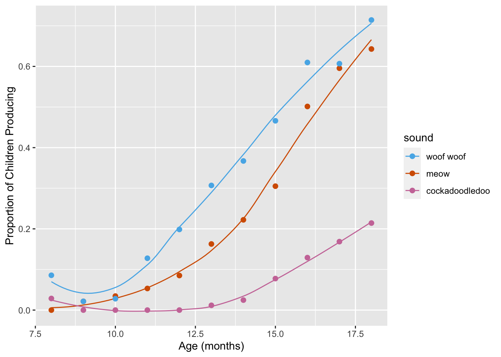

3 Colors with Animal Sounds
For the rest of today, we’ll play with the sounds dataset. This data was derived from the R package wordbankr, an R interface to access Wordbank- an open source database of children’s vocabulary development. The tool used to measure children’s language and communicative development in this database is the MacArthur-Bates Communicative Development Inventories (MB-CDI). The MD-CDI is a parent-reported questionnaire.
## Parsed with column specification:
## cols(
## age = col_double(),
## sound = col_character(),
## kids_produce = col_double(),
## kids_understand = col_double(),
## kids_respond = col_double(),
## prop_produce = col_double(),
## prop_understand = col_double()
## )We’ll be making this plot!
